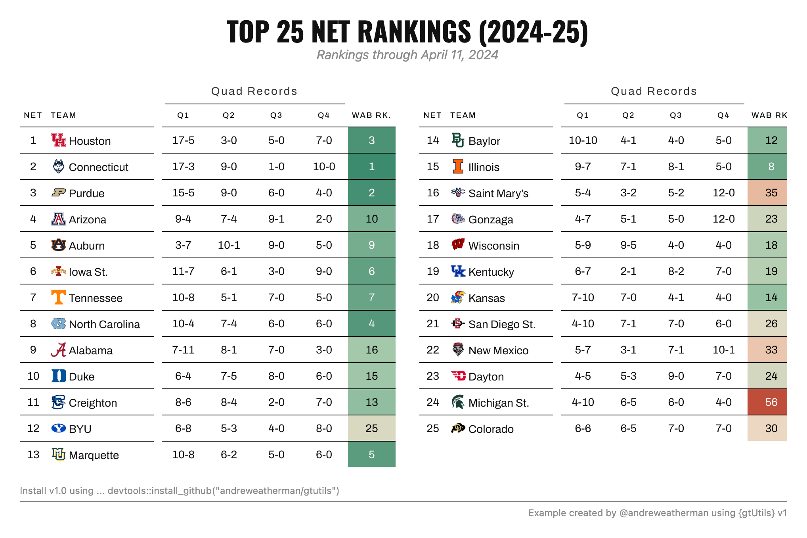
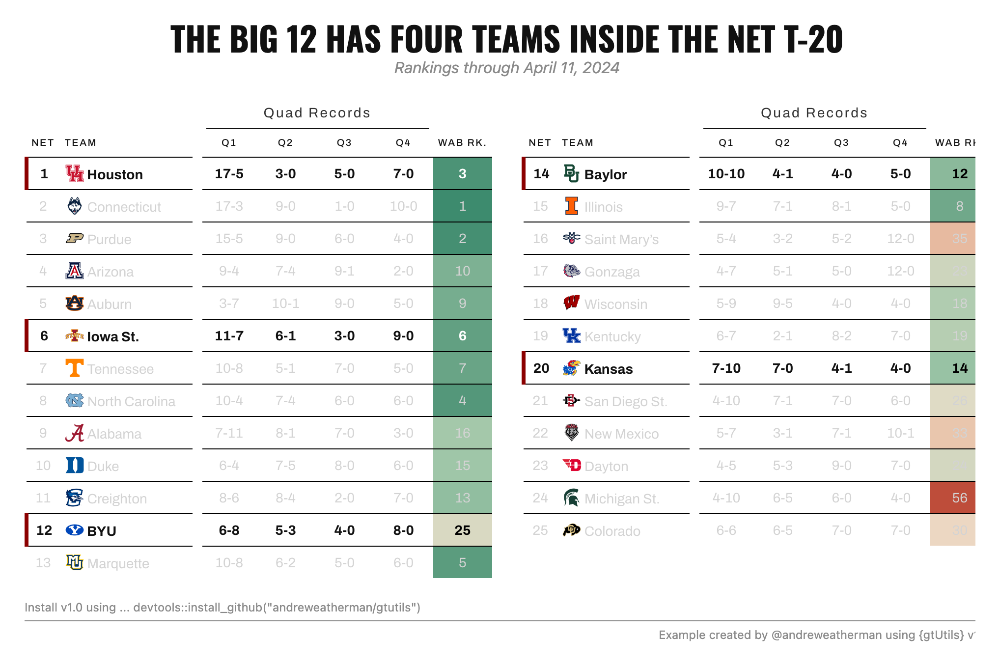

Nobody likes a long table. Put 25 rows next to a handful of columns and you get an image twice as tall as it is wide, mostly empty, with half the values scrolled off the bottom of a feed. The fix is to fold that one tall table into two shorter ones and set them side by side.
The old
trick for this was to pivot everything into a wide format first,
hand gt a single frame, and rename every column with a
suffix. It works, but it is fiddly, and per-cell coloring gets awkward
once the data is reshaped.
v1.0 adds gt_grid(), which goes the other
way. You build each block as a normal gt table, put the
tables in a list, and gt_grid() arranges the list. Nothing
gets reshaped, so every block is a real table you can style with the
rest of the package. This vignette uses two other new v1.0
functions along the way, gt_color_ranks() and
gt_spotlight(), and covers what each one does.
The data
We start with the top 25 of the NCAA’s NET rankings (from 2024-25),
each team’s quadrant records, and its Wins Above Bubble (WAB) rank. The
last line is the only unusual step. cbbplotR’s
gt_cbb_teams() replaces the team name with a logo-and-name
markdown string, which we render later with
fmt_markdown().
data <- read_csv("net_example.csv") %>%
filter(net <= 25) %>%
select(net, team, quad1, quad2, quad3, quad4, wins_above_bubble_rk, conf) %>%
gt_cbb_teams(team, logo_height = 20)Before splitting anything, two values are computed once, off the full table.
wab_domain <- range(data$wins_above_bubble_rk, na.rm = TRUE)
sizes <- c(13, 12)
chunks <- split(data, rep(seq_along(sizes), sizes))wab_domain is the range of the WAB rank column across
all 25 teams, and it matters because of how coloring works. A color
scale is built from whatever data it sees. If each block builds its own
scale, block one maps its colors to teams 1 to 13 and block two maps to
teams 14 to 25, so the same rank lands on a different shade depending on
which block a team happens to fall in. Computing the domain once and
handing it to both blocks keeps one scale across the whole table.
sizes sets the split. We want 13 rows in the first block
and 12 in the second. rep(seq_along(sizes), sizes) turns
c(13, 12) into 13 1s followed by 12
2s, and split() cuts the data on that. For
three blocks, use c(9, 8, 8). The layout follows from the
sizes you pick.
Coloring a column by rank
Inside the table we color the WAB rank column with
gt_color_ranks(), another new v1.0
function.
gt_color_ranks(wins_above_bubble_rk, domain = wab_domain)The arguments worth knowing:
-
palette: either a vector of hex colors or apaletteerpalette named as"package::palette". The default is a 5-color green-to-red ramp, which reads as good-to-bad. -
domain: the value range mapped onto the palette. LeftNULL, it is taken from the column itself. We passwab_domainso both blocks share a scale. -
reverse: flip the palette, for when low numbers should be red instead of green. -
pal_type:"discrete"or"continuous", which only matters when you hand it apaletteerpalette. -
na_color: fill for missing values, white by default. -
autocolor_text: sets the text color for contrast against the fill, so dark cells get light text automatically. On by default.
It colors values as they are and does not rank for you, so it works
on any numeric column. Reach for a paletteer palette when
you want something other than the default ramp:
gt_color_ranks(wins_above_bubble_rk, palette = "viridis::mako",
pal_type = "continuous", reverse = TRUE)One table, applied to each block
Every block is a gt table, so we write the recipe once
and lapply() it over the chunks. None of this is
grid-specific. It is the same table you would build for a single
frame.
tbls <- lapply(chunks, function(x) {
gt(x) %>%
gt_theme_swiss() %>%
cols_hide(conf) %>%
cols_align(columns = -c(team), align = "center") %>%
cols_align(columns = team, "left") %>%
cols_label(team = "Team", net = "NET", wins_above_bubble_rk = "WAB Rk.") %>%
cols_label_with(columns = starts_with("quad"),
fn = function(x) paste0("Q", parse_number(x))) %>%
cols_width(team ~ px(140), starts_with("quad") ~ px(60)) %>%
tab_spanner(columns = starts_with("quad"), label = "Quad Records") %>%
gt_color_ranks(wins_above_bubble_rk, domain = wab_domain) %>%
fmt_markdown(team) %>%
gt_add_divider(team, color = "white", weight = px(10)) %>%
tab_options(
data_row.padding = px(6),
table_body.hlines.style = "solid",
table_body.hlines.color = "black",
table_body.hlines.width = px(1)
)
})gt_color_ranks(..., domain = wab_domain) is the shared
scale from earlier. fmt_markdown(team) renders the logo
strings gt_cbb_teams() produced.
gt_add_divider() (from gtExtras) adds a white
gap after the team column so the records do not crowd the logos.
cols_hide(conf) keeps the conference column in the data
but hides it from the table (for the second example).
Laying it out with gt_grid
Now the list goes to gt_grid().
gt_grid(tbls, ncol = 2, gap = 30,
title = "Top 25 NET Rankings (2024-25)",
subtitle = "Rankings through April 11, 2024",
title_style = list(font = "Oswald", size = 34, transform = "uppercase",
margin_bottom = -4),
subtitle_style = list(italic = TRUE, color = "#8A8A8A"),
caption = md('Install v1.0 using ... devtools::install_github("andreweatherman/gtutils")'),
caption_style = list(align = "left"),
source_note = "Example created by @andreweatherman using {gtUtils} v1.0",
caption_rule = TRUE)
ncol sets how many tables go across, and the number of
rows follows from the list length. gap is the space between
them in pixels. There is also an align argument
("top", "center", "bottom") for
when the blocks are different heights, which is common with an uneven
split like ours.
The header and footer are set on the grid, not on the individual
tables, so one title covers both blocks instead of a title stranded on
each. title, subtitle, caption,
and source_note are the four text slots. Setting
caption, source_note, and
caption_rule = TRUE together gives the 538-style split
caption. caption accepts md(), so links and
bold text work.
Each text slot has a matching *_style list, and the keys
are the same across all of them:
-
font(a Google font name),size,color,weight,italic,spacing,transform(like"uppercase"), andalign. -
line_height,margin_top,margin_bottom,padding_top,padding_bottomfor spacing. Numbers are read as pixels.
Anything you leave out keeps its default, so the
title_style above only changes the font, size, transform,
and margin, and the weight and centering stay put.
margin_bottom = -4 pulls the subtitle up closer to the
title.
Two more arguments are worth knowing. labels puts a
short caption above each individual table (recycled across the list,
styled by label_style), which is handy for small multiples
like one table per-conference or per-season. file writes
the grid straight to a PNG. bg, whitespace,
and zoom control that export.
Spotlighting rows across blocks
To make a point about the Big 12 having four teams in the NET top 20,
we use gt_spotlight(), the last new v1.0
function in this example. It lights the rows you name and dims the rest.
Because it reads a filter expression against each block’s own data, it
drops right into the lapply().
The wrinkle is that the Big 12 teams fall across both blocks. A plain
gt_spotlight() on a block with no matching rows would leave
that block fully lit, so the second block would look untouched while the
first dimmed. That is what if_none = "dim" handles: a block
that matches nobody dims completely, so the highlight looks consistent
across both.
tbls <- lapply(chunks, function(x) {
gt(x) %>%
gt_theme_swiss() %>%
cols_hide(conf) %>%
cols_align(columns = -c(team), align = "center") %>%
cols_align(columns = team, "left") %>%
cols_label(team = "Team", net = "NET", wins_above_bubble_rk = "WAB Rk.") %>%
cols_label_with(columns = starts_with("quad"),
fn = function(x) paste0("Q", parse_number(x))) %>%
cols_width(team ~ px(140), starts_with("quad") ~ px(60)) %>%
tab_spanner(columns = starts_with("quad"), label = "Quad Records") %>%
gt_color_ranks(wins_above_bubble_rk, domain = wab_domain) %>%
fmt_markdown(team) %>%
gt_add_divider(team, color = "white", weight = px(10)) %>%
gt_spotlight(rows = conf == "B12", if_none = "dim",
accent_color = "darkred", dim_color = "lightgrey") %>%
tab_options(
data_row.padding = px(6),
table_body.hlines.style = "solid",
table_body.hlines.color = "black",
table_body.hlines.width = px(1)
)
})
gt_grid(tbls, ncol = 2, gap = 30,
title = "The Big 12 has four teams inside the NET T-20",
subtitle = "Rankings through April 11, 2024",
title_style = list(font = "Oswald", size = 34, transform = "uppercase",
margin_bottom = -4),
subtitle_style = list(italic = TRUE, color = "#8A8A8A"),
caption = md('Install v1.0 using ... devtools::install_github("andreweatherman/gtutils")'),
caption_style = list(align = "left"),
source_note = "Example created by @andreweatherman using {gtUtils} v1.0",
caption_rule = TRUE)
This is why conf stayed hidden.
gt_spotlight() filters on it with
rows = conf == "B12" even though the column is never drawn
(because it still exists in the data we call in our lapply block).
rows also accepts plain row numbers, like
rows = 1:5, when you want to highlight by position.
The rest of its arguments control the look:
-
accent_color: draws a bar on the left edge of each lit row. Supplying a color is what turns the bar on.accent_widthsets its thickness, andaccent_columnmoves it to a different column when the leftmost one is not where you want it. -
dim_color: the text color for the muted rows. Setting it toNULLemphasizes the chosen rows without dimming the others. -
fill,text_color, andbold: styling for the lit rows themselves. -
columns: narrows the spotlight to some columns, dimming the rest of the row too, so only those cells stay at full strength.
Outside of grids, gt_spotlight() is useful on a single
table any time you want one row or a small group highlighted.
Wrapping up
The pattern is the same both times: build a normal table,
lapply() it over your chunks, and pass the list to
gt_grid(). The only two faceting-specific habits are
computing your color domain once so the blocks agree, and using
if_none = "dim" when a highlight lands in some blocks and
not others.